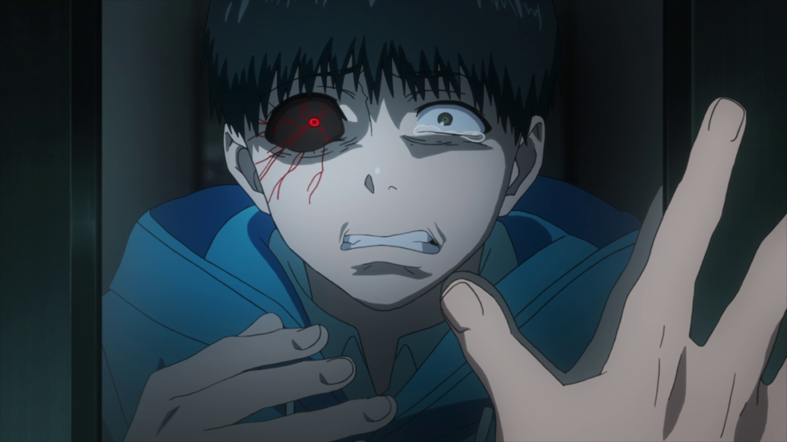

Tokyo Ghoul
Tokyo Ghoul would be classified as a horror anime and is not for
the faint of heart. This series takes place in Tokyo where humans and ghouls
must coexist together - even though the relationship between the two is more
of predator and prey. We are introduced to the main character, Kaneki Ken, and follow his
life as he transitions into the "one-eyed ghoul"!
Tip: Watch this anime if you're into intellectual horror!

DangonRonpa
One of the best animes out there. Although deemed a horror anime because of how
gory it can get sometimes - the storyline offers viewers a fast paced thriller. This
anime is centered around a group of childern that have been summoned to attend a prestigious
high school. Upon arrival - the children must either kill or be killed all without being caught
by their peers. At the end of the day, these kids must act as the defendant, judge, and jury
and convict one of their peers to suffer a horrendous death for their actions. If you like murder
mysteries with a twist - check out DangonRonpa!
Tip: Watch this anime if you want to test your detective skills!

Hellsing Ultimate
Hellsing Ultimate is one of those animes that focuses on fantasy horror that challenges its
viewers to decide what is deemed as good or bad. The viewers are introduced to one of the main
characters - Seras Victoria - who is turned into a vampire after suffering a bullet in the chest.
THe vampire that turned her - named Alucard - serves as an overpowering secondary main character
for the audience. Set in Nazi Germany - viewers are given blatant symbolisms with a supernatural twist.
Tip: Watch this anime if you like to look past symbols and find the message being transmitted!